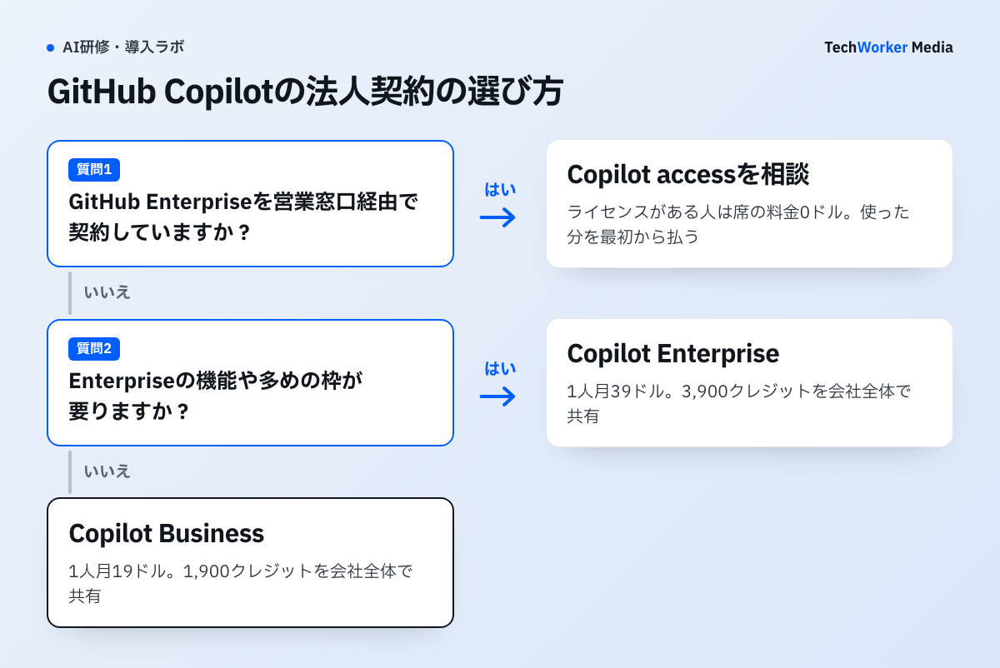
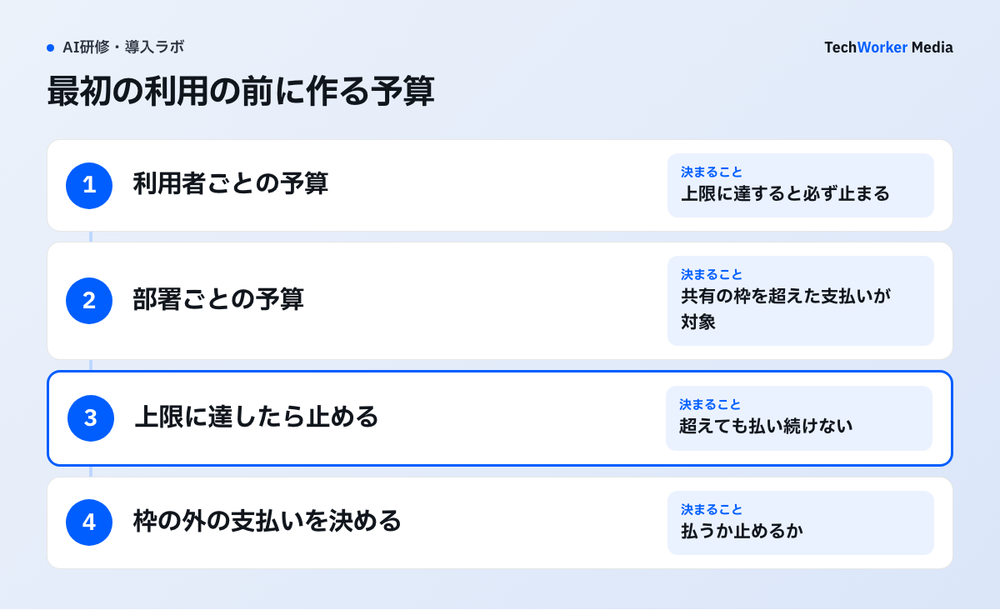

GitHub Copilotの法人契約は、Copilot Business（1人月19ドル）、Copilot Enterprise（1人月39ドル）、2026年10月28日に始まったCopilot accessの3つです。Copilot accessでは、GitHub Enterprise Cloudのライセンスを持つ人の席の料金が0ドルになり、使った分だけを払います。
- Business・Enterprise：席の料金と同じ額のAIクレジット（1クレジット＝0.01ドル）が付き、会社全体で共有します。
- Copilot access：席の料金は0ドル（GitHub Enterpriseのライセンスがない人は月10ドル）です。付いてくるクレジットはなく、最初の利用から払います。
- 選び方：GitHub Enterprise Cloudを営業窓口経由で契約している会社は、Copilot accessを営業窓口に相談する価値があります。それ以外の会社は、いまはBusinessかEnterpriseを選びます。
GitHubの公式ドキュメント（2026年11月13日確認）をもとに、料金表、50人での年額、予算の設定をまとめます。
GitHub Copilotの法人契約は、何が変わりましたか？
2026年10月28日から、GitHub Enterpriseのライセンスを持つ人は、席の料金0ドルでCopilotを使えるようになりました。利用は最初から使った分の支払いです。
GitHubの変更履歴（Changelog）の発表は次のとおりです。
原文“Enterprises working with a GitHub or Microsoft account team can now get Copilot included with GitHub Enterprise for every licensed user.”
日本語訳GitHubまたはMicrosoftの営業窓口と取引している企業は、GitHub Enterpriseのライセンスを持つすべての利用者に、Copilotを含められるようになりました。
同じ発表には、利用は最初のリクエストから会社の予算に計上され、付いてくる利用枠はないと書かれています。コードの補完は予算がなくても動きます。チャット、コードレビュー、クラウドでのエージェントは、予算が残っているときだけ使えます。
この発表で分かるのは、契約の形と対象までです。自分でオンライン契約している会社（セルフサーブ）は、まだ対象外です。GitHubは「数週間のうちに日付を知らせる」としており、2026年11月13日の時点で日付は出ていません。BusinessとEnterpriseは、これまでどおり新規でも買えます。
法人向けの料金はいくらですか？
Businessは1人月19ドル、Enterpriseは1人月39ドルで、それぞれ1,900と3,900のAIクレジットが付きます。Copilot accessは席の料金0ドルか10ドルで、クレジットは付きません。
| 契約 | 席の料金（1人月） | 付いてくるAIクレジット | 使える機能・モデル |
|---|---|---|---|
| Copilot Business | 19ドル | 1,900（会社全体で共有） | Businessの範囲 |
| Copilot Enterprise | 39ドル | 3,900（会社全体で共有） | Enterpriseの範囲 |
| Copilot access（GitHub Enterpriseのライセンスあり） | 0ドル | なし（最初から使った分を払う） | Enterpriseと同じ |
| Copilot access（Copilot Standalone、ライセンスなし） | 10ドル | なし（最初から使った分を払う） | Enterpriseと同じ |
出典：GitHub Docs「Plans for GitHub Copilot」「What's changing with GitHub Enterprise and Copilot billing」（2026年11月13日確認、米ドル）
AIクレジットは、1クレジット＝0.01ドルです。Businessの19ドルには1,900クレジット（19ドル分）、Enterpriseの39ドルには3,900クレジット（39ドル分）が付きます。席の料金と、付いてくるクレジットの額が同じです。
付いてくるクレジットは、会社全体で共有します。たとえばBusinessの100人なら、月190,000クレジットを全員で使います。余った分は翌月に繰り越せず、毎月1日の0時（協定世界時、日本時間の9時）に戻ります。
コードの補完（入力中に出る提案と、次の編集の提案）は、どの契約でもクレジットを使いません。クレジットを使うのは、チャット、コードレビュー、エージェントなどです。消費する量はモデルと、送った文字数（トークン）で決まります。
ChatGPT・Claude・Gemini・Microsoft 365 Copilotの法人料金は生成AIの法人契約を比較にまとめています。主要4社の料金比較表と稟議書の雛形は、下の枠から受け取れます。
開発者50人の会社では、年いくらになりますか？
Businessは年11,400ドル、Enterpriseは年23,400ドルです。Copilot accessは席の料金が0ドルで、払うのは使った分だけです。
開発者50人が全員、GitHub Enterpriseのライセンスを持っている会社で計算します。
- Business：19ドル×50人×12か月＝年11,400ドルです。毎月95,000クレジット（950ドル分）が共有で付きます。
- Enterprise：39ドル×50人×12か月＝年23,400ドルです。毎月195,000クレジット（1,950ドル分）が共有で付きます。
- Copilot access：席の料金は0ドルです。50人で月60,000クレジットを使えば月600ドル、95,000クレジットなら月950ドルです。
Businessでは、使った量が付いてくる枠より少なくても、席の料金は変わりません。枠を超えた分は、同じ0.01ドルの単価で払います。つまりBusinessの月額は「950ドルか、使った額か、多いほう」です。Copilot accessの月額は「使った額」です。
この計算から、GitHub Enterpriseのライセンスを持つ人については、同じ量を使う限り、Copilot accessの支払いはBusinessを上回りません。しかも使える機能はEnterpriseと同じです。ただし、GitHub Enterprise自体の料金（料金ページで1人月21ドルから）は別にかかります。GitHub Teamなどから乗り換える場合は、その差額も足して比べます。
クレジットの消費の目安も計算しておきます。公式の単価表では、Claude Sonnet 5.5は100万トークンあたり入力2ドル・出力10ドルです。1回のチャットで入力2万トークン・出力2千トークンを使うと仮定すると、0.06ドル（6クレジット）です。この仮定では、1,900クレジットはおよそ316回分です。実際の量は、管理画面の利用状況で確かめます。
どの契約を選べばよいですか？
GitHub Enterpriseを営業窓口経由で契約していればCopilot accessを、そうでなければBusinessかEnterpriseを選びます。

- GitHub Enterpriseを営業窓口経由で契約している：Copilot accessを相談します。移行は任意で、BusinessやEnterpriseから自動では切り替わりません。切り替えは月の1日付けです。
- GitHub Enterpriseを自分でオンライン契約している：Copilot accessはまだ使えません。いまはBusinessかEnterpriseを選び、セルフサーブの開始日の発表を待ちます。
- GitHub FreeかGitHub Teamを使っている：Copilot accessの対象外です。Businessを選びます。Copilot EnterpriseはGitHub Enterprise Cloudを使う企業向けです。
BusinessとEnterpriseのどちらにするかは、使うモデルと機能で決めます。Enterpriseは付いてくるクレジットが多く、新しいモデルや機能を先に使えます。開発者の多くが補完と短いチャットだけなら、Businessから始めます。
GitHub Enterprise Serverだけを使っている会社は、公式の案内でCopilotの対象外とされています。注意点はほかに2つあります。1つの企業アカウントの中で、Copilot accessとBusiness・Enterpriseの席は混ぜられません。組織ごとに別の契約を選ぶこともできません。また、Copilot accessでも、管理者が利用者に席を割り当てる作業は必要です。
公式は、移行を決める前に、いまの月の支払いと、利用状況の画面の利用量から見積るよう勧めています。付いてくる枠で賄っている分も含めて、使った量を数えるのがポイントです。
使いすぎを止めるには、何を設定しますか？
最初の利用の前に予算を作り、「上限に達したら止める」をオンにします。BusinessとEnterpriseでは、枠を超えた後の支払いが最初から有効になっています。

GitHubの予算には、利用者ごと、コストセンター（部署などのまとまり）ごと、組織ごと、企業全体の4つの種類があります。公式は、最初の利用の前に予算を作るよう勧めています。
- 利用者ごとの予算を決める：全員に同じ上限をかけ、多く使う人だけ個別に上げます。利用者ごとの予算は、上限に達すると必ず止まります。
- 部署ごとの予算を決める：コストセンターに上限をかけます。BusinessとEnterpriseでは、共有の枠を使い切った後の支払いだけが対象です。
- 「上限に達したら止める」をオンにする：組織・企業の予算は、この項目がオフ（既定）のままだと、上限を超えても通知だけで支払いが続きます。
- 枠の外の支払いを許すか決める：BusinessとEnterpriseで枠を超えた支払いを一切しない場合は、AI Controlsの設定で「AI credits paid usage」を無効にします。Copilot accessでは、これを無効にするとチャットなどが使えなくなります。
予算の画面は、組織か企業の請求の設定の「Budgets and alerts」にあります。予算の75%・90%・100%で、管理者にメールと画面で知らせる設定もできます。ただし利用者ごとの予算では、通知が届かない場面があると公式は書いています。予算は作った日以降の利用だけを数えるため、作った最初の月は上限を超えることがあります。
支払いは、Azureのサブスクリプション経由も選べます。Azure経由では、その月の利用が翌月初めのAzureの請求書に載ります。条件は契約の形で変わるため、営業窓口で確かめます。
11月16日に何が変わりますか？
2026年11月16日に、Claude Opus 4.8、Claude Opus 5、GPT-5.6 TerraがCopilotで使えなくなります（Opus 4.8は個人の年額プランだけ残ります）。
GitHubは2026年10月15日の変更履歴で、チャット・エージェント・コードの補完を含むすべての場面で、これらのモデルを廃止すると発表しました。代わりの候補は、Claude Opus 4.8とClaude Opus 5にはClaude Opus 5.5、GPT-5.6 TerraにはGPT-6.1 SolかGPT-6 Lunaです。
管理者が許可するモデルを絞っている会社は、11月16日の前に代わりのモデルを許可します。公式の単価表では、Claude Opus 5.5（入力4ドル・出力20ドル）は、Claude Opus 5（入力5ドル・出力25ドル）を下回ります。同じ使い方なら、クレジットの消費は減ります。
稟議で聞かれることは何ですか？
よく聞かれるのは、人数と年額、使った分の上限、データの扱い、支払い方法、乗り換えの時期の5つです。
- 人数と年額：席の料金×人数×12か月を出します。Copilot accessなら、利用の見込みを月額で示します。
- 使った分の上限：利用者ごとと会社全体の予算の額と、「上限に達したら止める」の設定を書きます。
- データの扱い：入力したコードや会話の扱いを、GitHubの契約条件で法務が確かめます。
- 支払い方法：GitHubに直接払うか、Azure経由で払うかを決めます。
- 乗り換えの時期：Copilot accessに移る場合は、月の1日付けです。セルフサーブの会社は、開始日の発表を待つと書きます。
研修とあわせて稟議を出す場合は、受講後に誰がどのモデルを使うかも決めておきます。席の料金とは別に、上位のモデルの利用が増えるためです。研修の費用の組み方はClaude Codeの法人研修の費用の節でも説明しています。
よくある質問
1人月19ドルです。席ごとに1,900のAIクレジット（19ドル分）が付き、会社全体で共有します。共有の枠を超えた分は、1クレジット0.01ドルで払います。
GitHub Enterprise Cloudのライセンスを持つ人は、Copilot accessで席の料金が0ドルになります。ただし付いてくるクレジットはなく、チャットなどの利用は最初から払います。営業窓口経由の契約が対象で、自分でオンライン契約している会社は2026年11月13日時点で対象外です。
切り替わりません。移行は任意で、営業窓口に申し込みます。切り替えは月の1日付けです。1つの企業アカウントの中で、Copilot accessとBusiness・Enterpriseの席は混ぜられません。
コードの補完と次の編集の提案は使い続けられます。止まるのは、チャット、コードレビュー、クラウドでのエージェントなど、クレジットを使う機能です。席そのものは外れません。
別の製品で、契約も別です。GitHub Copilotは開発者のコードの作業向けで、GitHubの契約に付けます。Microsoft 365 CopilotはWordやTeamsで使う製品で、Microsoft 365の契約に付けます。
次の一歩は何から始めればよいですか？
いまのGitHubの契約の形と、直近1か月のCopilotの利用量を確かめることから始めます。
- GitHubの契約がFree・Team・Enterpriseのどれか、営業窓口経由かセルフサーブかを確かめます。
- 管理画面の利用状況から、直近1か月のクレジットの量を出し、上の計算に当てはめます。
- 最初の利用の前に、利用者ごとと会社全体の予算を作ります。
TechWorkerでは、Claude Codeなど開発に使うAIを含む生成AIの研修を、受講者の実際の業務1本から組みます。30日後に、使った人の割合と1件の時間を測って報告します。検討段階のご相談だけでも歓迎です。
出典と確認範囲
確認日：2026年11月13日。料金は米ドル表示です。データの扱いの詳しい条件は、GitHubの契約条件で確認してください。料金と契約の条件は変わるため、契約の時点で公式情報と営業窓口で確認してください。50人の計算とクレジットの消費の目安はTechWorkerの試算で、トークン数は仮定です。
- GitHub Changelog「GitHub Enterprise now includes access to GitHub Copilot」（2026年10月28日）
- GitHub Docs「Plans for GitHub Copilot」
- GitHub Docs「What's changing with GitHub Enterprise and Copilot billing」
- GitHub Docs「Usage-based billing for organizations and enterprises」
- GitHub Docs「Budgets for usage-based billing」
- GitHub Docs「Setting up budgets to control spending on metered products」
- GitHub Docs「Models and pricing for GitHub Copilot」
- GitHub Docs「GitHub Copilot billing through Azure」
- GitHub Changelog「Upcoming deprecation of selected GitHub Copilot models in mid-November」（2026年10月15日）
- GitHub「Pricing」（GitHub Enterpriseの料金）